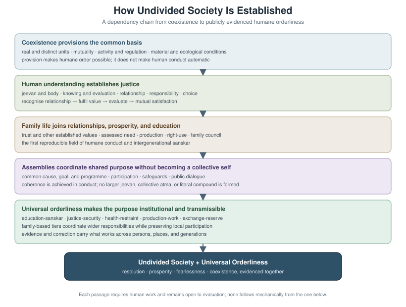

How Undivided Society Is Established
Author: AnalyticMadhyasthDarshan.org — a group of people studying philosophy. Source repository: raghavamohan/AnalyticMadhyasthDarshan.
Edited on: June 27, 2026, 11:33 PM IST The question: What is ’s grand vision of undivided society (akhand samaj), and how — according to the primary texts — is it established and evidenced?
This study gives the consolidated architectural account: one connected chain from coexistence through awakening to social evidence. It builds on the coexistence ontology, completeness transitions, and social-order exposition in The Ontology of Coexistence and related studies in this collection (see References). It reads Shri A. Nagraj’s primary works — (MVD), Samadhanatmak Bhautikvad (SB), Vidya (JV), Janvad (JVD), and Adhyatmvad (AVD) — and states what the darshan itself teaches about establishment. Comparative treatment of other traditions is intentionally omitted; this paper expounds ’s vision only. Minute detail on statutory governance, formal template mathematics, or cyclical-economics treatises appears in linked studies listed under References.
Standpoint and scope
These studies are written from the standpoint of a scientist and technologist — someone trained to graduate-level physics and mathematics. That background informs how the atomic development account in §1.8 is read, but this paper does not perform parallel comparison with Advaita Vedanta, modern Western philosophy, or the natural sciences; those comparisons belong in other papers in this collection.
The work reads the primary texts carefully and states what follows from the darshan itself on how undivided society can be established. The aim is a self-contained architectural exposition — rigorous, checkable prose that a reader can follow without opening other studies for the main chain. Formal mathematical treatment and institutional codification may follow or supplement elsewhere; this paper does not require them. Terms are defined in the essay where they first arise; a consolidated glossary appears in the Appendix.
1. The architecture of establishment
holds that akhand samaj is not an automatic scale-up of physical regulation. It is an achieved telos at the knowledge order: when awakened humans close the justice cycle, evidence resolution, prosperity, fearlessness, and coexistence together, and compose assemblies from family through community into humankind as one unit paired with universal orderliness. The architecture has five layers and a telos; the figure at §1.21 renders the whole.
1.1 Coexistence and saturation
defines existence as ever-present coexistence — formless Omnipresence () and countless bounded units of nature, co-eternal, neither made from the other (SB, p. 48; MVD, p. 11). What changes is unit-activity, development, and awakening within saturation, not the ground itself.
Saturation () names the bond: each unit is surrounded, submerged, and soaked in . Through that bond every unit has inherent energy and regulatory order in it — not extracted from a finite store by an outside push (SB, pp. 48, 57, 69).
“Nature, saturated in Omnipotence, exists as countless units. Each unit, being saturated in Omnipotence, remains surrounded, submerged, and soaked in it.” - SB, p. 48
is actionless (-shunya): it performs no actions. It is nevertheless named supreme cause (mahakaran) in the sustaining sense — the ground through which unit-activity is energised and regulated, not the efficient trigger of particular change (MVD, pp. 288–289; SB, p. 62). The causal work of change is done by units themselves.
Madhyasth means mediative: regulates and conserves every unit without itself acting (MVD, p. 26). The same mediative pattern recurs within nature at the atomic nucleus and, in sentient , at atma (§1.8).
1.2 Unit signature and relationships
Every saturated unit carries the same four inseparable aspects — form, properties, essential nature, and — regardless of order (MVD, pp. 50–51). Properties (gun) are generative, degenerative, and mediative: assisting creation, dissolution, and sustainment in mutuality.
Nothing in nature is isolated:
“Every entity of nature recognises another; that is why it fulfils. An atomic particle too recognises another, and as a result, these particles abide in orderliness.” - JV, p. 69
A relationship is mutuality where expectations are predetermined toward completeness; an association is mutuality where expectations are voluntary (MVD, pp. 61–62). Fulfilment proceeds through capacity (kshamata), ability (yogyata), and receptivity (patrata). What units reciprocate is value — essentiality (maulikta) in every order (SB, p. 50).
In its natural state, a unit moves toward development; in its excited state, toward decline (SB, pp. 14–15). Participation means recognising and fulfilling built-in relationships — the completeness drive orienting unit-activity toward satisfaction (SB, p. 51).
1.3 Activity and regulation
All change is unit-activity — the inseparable triad effort, motion, and result ():
“Every physical-chemical activity is an inseparable presence of effort, motion and result. Each of these is a joint form of the other two.” - SB, p. 58
Regulation becomes evident as law: orderliness with ness, expressed in order-specific conformance regimes (SB, p. 57). The regulation ladder reads upward:
- Saturation — inherent energy and order in each unit.
- Law — mutual-recognition provision structurally real in coexistence.
- Order conformance — definiteness of conduct at each order (niyati-vidhi; §1.5).
- Inward regulation — mediative atma disciplining faculties in (§1.12).
- Justice () — evaluative closure of the relational cycle at the knowledge order (§1.11).
- Assembly order — human compositions persisting while relationships are fulfilled.
Orderliness at the order level is self-regulation (swatah-saspurt): inherent in nature’s orders, not dispensed by acting as governor (MVD, p. 26).
1.4 Composition
Complementary units compose into larger units when relationships are fulfilled:
“Everywhere, there exists a natural inclination towards coexistence. This inclination is what leads atomic particles to assemble into atoms, atoms to combine into molecules, and molecules to combine into molecular forms.” - JV, p. 67
In a mixture (mishran), components retain separate conducts. In a compound (yaugik), components combine in definite proportion and present a new unified signature (MVD, p. 42). Composition is not development — crossing to sentience is constitutional completeness of the atom, not mere assembly size (SB, pp. 75–76).
Assemblies persist in natural state while relationships are fulfilled and decline when they are not (SB, p. 14). Transmission of composition method (rachna vidhi) runs by constitution, seed, lineage, or education- according to order (JV, pp. 48, 82; MVD, pp. 92–93).
1.5 Four orders and the way of existence
names four orders: material (padarth), pranic/bio (pran), animal (jeev), and knowledge/human (). Higher orders include lower s cumulatively (SB, p. 179; MVD, p. 115). Material and pranic orders are insentient (jada); hope to live (jeene ki aasha) enters at the animal order — the sentient threshold (§1.8).
The way of existence (niyati-vidhi) names definiteness in each order’s conduct:
| Order | Conformance mode | Definite or achieved |
|---|---|---|
| Material | Result- / structural-conformance | Definite |
| Bio | Seed-conformance (via genetic code / seed-lineage) | Definite |
| Animal | Species-conformance | Definite |
| Knowledge / human | Sanskar-conformance | Achieved through knowing → believing → recognising → fulfilling |
Macro existential progression (niyati-kram) — material → pranic → animal → knowledge on Earth — is the order-emergence chain named in Paribhasha Samhita and expounded in MVD/SB (MVD, pp. 8, 13). It must be kept distinct from atomic development progression (vikas-kram) and awakening progression (jagriti-kram) (§1.7).
Because humans conform to (understanding and conditioning) rather than physical lineage or genetic codes, the method of composition for human society cannot be transmitted biologically. A stable human assembly must perpetuate itself through the generation-to-generation transmission of realized understanding. This makes education- not merely a social service, but the primary systemic engine for conserving the structure of undivided society.
1.6 Six kinds of value
Essentiality sorts into six kinds of value at the knowledge order (MVD p. 306; JV pp. 43, 138–139):
| Value type | What it is |
|---|---|
| Utility (upyogita) | Usefulness of natural abundance through labour |
| Art (kala) | Aesthetic enhancement layered on usefulness |
| Jeevan values | Happiness, peace, contentment, bliss — harmonies within the sentient unit |
| Human values | Humane living grasped through coexistence understanding |
| Established values | Care, guidance, trust, affection, gratitude, glory, love, reverence, respect — flowing when relationships are recognised |
| Expression values | Right-use of body, mind, and wealth; civic conduct in the social order |
Justice (§1.11) is the operation on these values at the knowledge order — recognise, fulfil, evaluate, mutual satisfaction — not a member of the value set itself.
1.7 Four progressions
Four terms name progressions at different levels; they must not be collapsed (MVD, pp. 13–14):
- Niyati-kram — fixed order emergence: material → pranic → animal → knowledge.
- Niyati-vidhi — definiteness in each order’s conduct (§1.5).
- Vikas-kram — through the physicochemical complex until an atom reaches constitutional completeness ().
- Jagriti-kram — within constitutionally complete , toward activity and conduct completeness.
Vikas-kram and niyati-kram coincide at animal life — the order-level chain supplies the body, the atomic-level development supplies sentient — but they remain distinct axes (MVD, pp. 8, 13, 91; SB, pp. 76–77).
1.8 Constitutional completeness and the joint form
Development progression (vikas-kram). T1 is not posited arbitrarily. MVD understands vikas-kram in the atom as hungry and overfull atoms complementary until the atom becomes satiated and constitutionally complete — in being and abiding (MVD, p. 8). On Earth, atomic types appear as a sequence of hungry atoms (deficient in particles) and overfull atoms (bearing excess): hungry atoms continually incorporate particles until they reach an overfull state; from overfull to maximum capacity, particle decay occurs, allowing hungry atoms to absorb expelled particles into their structure — incorporation and expulsion cycles until the elevation point is reached (MVD, p. 8; SB, pp. 55, 59, 71). When the required particle constitution closes, the atom becomes satiated — constitutionally complete () — with neither increase nor decrease in particle count; qualitative change without quantitative change (SB, pp. 55, 59). T1 is irreversible at the atomic level (SB, p. 92). This grounds Layer 2 in the darshan’s own physicochemical account rather than in a bare assertion of sentience.
An insentient atom reaches through this particle incorporation and environmental mutuality. On crossing T1, it is liberated from molecular-bondage and weight-bondage; hope-bondage replaces them as the sentient mode’s defining bondage (MVD, p. 91):
“An evolving-constitution atom is with molecular-bondage and weight-bondage. However, when the contraction and expansion activity increases in this atom, it instantly breaks free from its group and attains constitutional completeness, becoming a atom.” - MVD, p. 91
At , latent intelligibility in is actualised as active sentience — latency actualised, not strong emergence from dead substrate. T1 is irreversible at the atomic level (SB, p. 92).
An animal or human is the joint form of constitutionally complete working through a body of that order (MVD, pp. 13, 115). The nucleus of every atom is mediative activity regulating generative–degenerative orbiting particles (MVD, p. 26); in , inward regulation under mediative atma is the sentient-scale counterpart (MVD, pp. 77, 277) — identity at two scales, not mere analogy.
1.9 Planes and completeness transitions
Orders name what a unit is; planes (pad) name where development has reached (SB, p. 52). Three completeness transitions structure awakening within the knowledge order:
| Transition | Completeness | What becomes evident |
|---|---|---|
| T1 | Constitutional (gathanpurnata) | Sentient jeevan; hope to live |
| T2 | Activity (kriyapurnata) | Orderliness with ness in awakened humans |
| T3 | Conduct (vyavaharpurnata) | Living proof (pramanikta) |
Pre-awakening humans occupy the delusional plane (body mistaken for self). Awakening moves through the deific plane toward the divine (complete) plane (MVD, p. 160; SB, pp. 137–138). Activity and conduct completeness belong to jagriti-kram within constitutionally complete — they source and seed assembly-scale akhand samaj, but do not automatically substitute for it (§1.9.2).
In the sentient mode, SB’s framework, when mapped onto the three completeness stages, yields: result toward constitutional completeness; effort toward activity completeness; motion toward conduct completeness (SB, p. 58). SB states the developmental goals explicitly: result toward immortality, effort toward restfulness, motion toward destination (SB, p. 71). At the knowledge order, restfulness of effort and destination of motion name what T2 and T3 evidence in awakened humans — not private calm or mere movement, but orderliness with ness and conduct others can recognise.
1.9.1 Activity and conduct completeness — achievement
MVD holds that in awakening progression, awakening in deluded humans itself is activity completeness and conduct completeness — the substance of jagriti-kram, not optional ornaments after private insight (MVD, p. 27). An awakened human nurtures right-use and purposeful-use through work with less developed nature; study, practice, and contemplation continue toward further awakening (MVD, p. 27).
How the milestones are reached. names a three-stage method: study, then experiment and practice, then realisation with evidence — the third stage is the accomplishment and success (MVD, p. 88). Realisation-evidence must embody humaneness in work and behaviour, becoming apparent within family order and world-family order (MVD, p. 88). Knowledge-order fulfilment runs knowing → believing → recognising → fulfilling under justice, , and truth (JV, p. 48; AVD, pp. 174–175). Inward regulation — mediative atma channelling curiosity in , enthusiasm in , delight in , immersion in , and realisation in atma — is essential throughout (MVD, p. 77).
Activity completeness (T2). Upon attaining realisation of orderliness, a person can become evidence of living in orderliness; this state, or the state of awakening itself, is activity completeness (AVD, p. 173). AVD observes that activity completeness — also meaning doing everything worth doing in humane ways — materialises through six modes: physical, verbal, mental, doing, getting-done, and consenting (AVD, p. 173). Living with justice and in orderliness is the meaningfulness of this stage; as a result, universality of orderliness and undividedness in human society becomes defined, explained, and prevalent (AVD, p. 173).
Conduct completeness (T3). Divine humans produce evidence of conduct completeness — named awakening completeness (jagritipurnata) (AVD, p. 173). Liberation from bondage is found in humane conduct; it must become apparent in work and behaviour (AVD, p. 173). — authentic conduct as living proof that understanding has taken hold — closes the evidence chain at this stage (Knowledge, Knower, and Known §1.6.1). AVD distinguishes two states of activity in humans: projection and reflection according to visualisation versus according to realisation (AVD, p. 176). Conduct completeness belongs to the second — faculties aligned under realisation, not picture-based imagination alone.
Delusion-less deific humans evidence activity completeness; divine humans with complete awakening evidence conduct completeness — the typology of human development on the planes (MVD, p. 160; MVD, p. 27). and understanding become complete only in the delusion-less state (MVD, p. 27).
1.9.2 Role in establishing akhand samaj
If T2 and T3 are individual milestones, how do they connect to society-scale undivided society? The texts answer not by collapsing the individual into the social, but by naming a ladder on which individual completeness sources assembly-scale telos while Layer 4 still evidences it in tradition.
Individual completeness and assembly-scale telos are tightly coupled in the texts — not collapsed into one, but not separable in the establishment chain.
MVD states the ladder from delusionlessness to social telos:
“Delusionlessness is awakening; awakening is enlightenment; enlightenment is lordship; lordship is sovereignty; sovereignty is undivided society and universal orderliness.” - MVD, p. 27 (translation from Hindi source text)
Activity and conduct completeness sit on this ladder as the achievements of jagriti-kram; they are not a parallel track beside akhand samaj.
AVD names humane, deific, and divine humans as those who act as sources of undivided society and universal system (AVD, p. 173). Divine humans evidence conduct completeness; their work depicts knowledge, existence-knowledge, and humane conduct — awakening completeness is the basis of evidence, since every person wishes to be evidence (AVD, p. 173). AVD further holds that humaneness is the definition and description of undivided society and universal orderliness, and that the way of awakening is the only way to recognise humaneness (AVD, p. 175). Undivided society and universal system are the only direction for a universal goal accessible to everyone (AVD, p. 175).
MVD postulates that the sentient unit evidences undivided society in human tradition upon awakening (MVD, p. 14). Realisation-evidence in family and world-family order is absolutely necessary for recognising and evaluating humaneness in all aspects of behaviour (MVD, p. 88). The architectural point is therefore twofold: awakened humans at T2/T3 source, seed, and exemplify the telos; assembly composition at family, community, and humankind scale still evidences it in tradition — individual completeness enables and initiates; Layer 4 closure at scale is not automatic scale-up of physical regulation alone (§1.13, §1.17).
1.9.3 Five operational traditions post-awakening
AVD names what awakened humans do operationally — the bridge from individual completeness to social-scale orderliness:
“While in the state of awakening, all humans are naturally found to be working towards establishing the harmonious tradition of non-accumulation (by way of prosperity), of affection (by complementariness), of knowledge (by knowledge of ), of simplicity (by holistic view of coexistence), and of fearlessness (by humane conduct).” - AVD, p. 14
These five prathishtha are not optional cultural ornaments after private insight. They are how awakened humans produce the material and relational conditions for undivided society. Read against JV’s five dimensions of universal orderliness (§1.18), the operational traditions map as follows: non-accumulation (a-sangraha) to exchange-reserve and production-work; affection (sneha) to justice-security; knowledge (vidya) to education-; simplicity (saralta) to health-restraint and holistic coexistence understanding; fearlessness (abhaya) to humane conduct closing the justice cycle across assemblies. Individual completeness at T2/T3 therefore sources telos; these five traditions are how that sourcing becomes livable tradition at scale.
1.10 Delusion and the six perspectives
Only at the knowledge order evaluates (JV, p. 70). Six built-in perspectives () structure evaluation:
“All human behaviour is manifest in six perspectives: - (1) pleasant-unpleasant, (2) healthy-unhealthy, (3) profit-loss, (4) justice-injustice, (5) -adharma, and (6) truth-untruth.” - MVD, p. 67
Inhumane refuge organises under priya, hita, and labh — instinct, body, and material gain. Humane refuge reorganises under , , and — regulating conduct, thought toward resolution, and realisation in existence respectively (MVD, pp. 67, 137). The lower triad remains legitimate in its domain but is not sufficient as the organising standpoint of a knowledge-order being.
Delusion — mistaking body for self — roots sectarian, defensive, and fear-bound sociality resembling animal collectivity under threat (MVD, Ch. 4; SB, pp. 91–92). Awakening is the knowledge-order gate without which Layer 4 evidence cannot close.
1.11 Justice, law, and evaluation
Below the knowledge order, recognition and fulfilment are lawful and definite without bearing the name justice. Once must evaluate and can err, the texts name the full relational activity justice:
“Recognising relationships, fulfilling values, evaluating, and achieving mutual satisfaction is justice.” - MVD, p. 311
Three registers must be kept apart:
| Register | Scope |
|---|---|
| Regulation / law | All four orders — inherent orderliness with ness |
| Justice (nyaya) | Knowledge order — complete relational cycle with evaluation |
| Statutory / public law | Human assemblies — codified order; may satisfy legality while violating justice |
Statutory codification (-niti, rajya-niti) belongs to institutional detail treated elsewhere; the architectural point is that justice names evaluative closure of values in relationships, not merely compliance with rules.
1.12 The awakening path
Knowledge-order fulfilment runs knowing → believing → recognising → fulfilling, then evaluation and choice (JV, p. 48; MVD, p. 77). Awakening proceeds through staged study, experiment and practice, and realisation with evidence in conduct (MVD, p. 88; JV, pp. 48–49). This study–experiment–realisation path is what the delusionlessness ladder in §1.9.2 names — from delusionlessness through awakening and enlightenment to sovereignty and undivided society.
AVD names realisation-rooted method: humane education- nurtures the art of living and the strength of realisation together (AVD, pp. 172–173). JVD names meaningful dialogue as the public form — content spanning resolution, prosperity, fearlessness, coexistence, understanding, honesty, responsibility, and participation (JVD, p. 76).
“The mode of channelling ’s energies towards development (awakening) is through curiosity in , enthusiasm in , delight in , elation and immersion in , and finally, realisation in atma. For this, inward regulation of energies is essential.” - MVD, p. 77
Inward regulation — mediative atma disciplining , , , , and the body — is what makes humane evaluation stable enough for social evidence. That regulation, carried through study and experiment into realisation-evidence, is what moves a human from the delusional plane through activity completeness (T2) to conduct completeness (T3) — the individual gate through which Layer 4 social evidence becomes possible (§1.9.1).
1.13 Provision versus achievement
Coexistence provisions regulation, values, relationships, and the six perspectives. It does not guarantee prosperity, trust, or undivided society regardless of conduct. Delusion, legality without justice, accumulation detached from right-use, false learning, and fear as lack of wisdom remain live failures at the knowledge order (MVD, pp. 263–264).
The architecture therefore has two sides at Layer 3–4: what is built in to coexistence, and what humans must evidence through awakening. Akhand samaj belongs to the second — as telos and achievable evidence, not as automatic ontological outcome.
1.14 The telos defined
Undivided society (akhand samaj) and universal orderliness (sarvabhaum vyavastha) are paired evidence in awakened human tradition:
“More than one human coming together or becoming organised is referred to as a family, community, or undivided society. In the awakened human tradition, undivided society is evidenced along with the universal orderliness.” - MVD, Ch. 4
“Society is humane only when it is undivided. Societal functioning means - participation for undivided society, in other words participation in universal orderliness.” - JVD, p. 157
Wealth exists within society, originates from society, and is meant for society; delusion alone drives ‘mine’ versus ‘yours’ individualism (MVD, p. 195). The undivided society is a system of orderliness comprising individuals living with understanding, connected through associations and relationships (MVD, p. 244).
AVD states that unity and undividedness is the natural expression of awakening — division appears only under delusion (AVD, p. 80). Humans alone evidence undivided society and serve as witness (drishta pad) to universal orderliness (MVD, p. 297; AVD, p. 214).
1.15 Sociality and production
Establishment at the social tier follows a definite production–conduct chain (MVD, Ch. 4):
“Sociality gives rise to needs; needs give rise to experimentation and production; experimentation and production give rise to creation of wealth; creation of wealth gives rise to use, right-use and purposeful-use; use, right-use and purposeful-use give rise to practicality; practicality gives rise to humaneness, and humaneness gives rise to sociality. Sociality is meaningful when it is towards undivided sociality.” - MVD, Ch. 4
Purposeful-use (prayojansheelta) names utilisation of body, mind, and wealth toward undivided society and universal orderliness upon awakening (MVD, Ch. 4). Material prosperity requires more production than needs; awakening is evidenced only by sadupyog conduct — otherwise decline is inevitable (MVD, p. 106).
JVD contrasts accumulation-and-comfort versus devotion-and-detachment — both proved insufficient; humans are evidenced in undivided society within understanding, aspiration, and participation in the universal system (JVD, p. 76). Tradition replete with understanding is the recourse for undivided society and universal orderliness (JVD, p. 93).
At the material level, sectarian divisions and state borders are driven by the fear of scarcity and the impulse for group-level accumulation (sangraha). When families produce a physical surplus beyond their needs and dedicate that surplus to right-use and purposeful-use, accumulation is replaced by trust and mutual distribution (a-sangraha). Per Avartansheel Arthshastra, the exchange-reserve (vinimay-kosh) system operates on value-equivalence rather than profit-extraction. By resolving the material cycle, the economic motive for defense, competition, and sectarian division is neutralized, establishing the material baseline for an undivided society.
The sociality–production chain, when closed through right-use and purposeful-use, manifests the four human goals — resolution, prosperity, fearlessness, and coexistence — at their respective levels (§1.16).
1.16 Four human goals jointly evidenced
JV names ‘s goal and the human goal distinctly, then ties them:
“The goal of is happiness, and the human goal is resolution, prosperity, fearlessness, and coexistence.” - JV, p. 165
“Resolution = Happiness. We realise happiness wherever we are resolved… We realise peace while evidencing resolution and prosperity in the family. We realise contentment by living orderly in society. We realise bliss in the course of evidencing our understanding.” - JV, p. 61
The four goals — , samridhi, abhaya, — are joint human telos, evidenced together when the justice cycle closes. They map to harmonies (happiness, peace, contentment, bliss) at individual, family, and societal levels — not one goal assigned to one tier alone. The table below is a synthesis from JV’s separate statements of goals and harmonies (JV, pp. 61, 165); JV does not present this four-level mapping as a single table.
| Level of Existence | Human Goal | Manifested Harmony (Jeevan Value) |
|---|---|---|
| Individual | Resolution (Samadhan) | Happiness (Sukh) |
| Family | Prosperity (Samridhi) | Peace (Shanti) |
| Society | Fearlessness / Trust (Abhaya) | Contentment (Santosh) |
| Nature / Existence | Coexistence (Saha-astitva) | Bliss (Anand) |
Awakened sociality contrasts with animal collectivity observed only under fear — never in study, production, or maintenance of orderliness (MVD, Ch. 4). Resolution itself is restfulness (vishram / abhyudaya) — comprehensive closure, not private calm alone.
1.17 Assembly composition
Human groupings compose upward: individual → family → community → undivided society. Organisation requires commonness of cause, goal, and programme for sustainment (MVD, Ch. 4).
AVD distinguishes terminologies that the deluded and awakened traditions use for the same scale. Sect (samaj in the deluded sense) names groupings of more than one family built on assumptions of race, colour, caste, ideology, and creed — assumptions that produce divisions and sections in what is naturally one humankind. Community (sampradaya in the awakened sense) names human tradition with purpose of completeness, awakening, and guidance toward undivided society, completeness, and unity (AVD, p. 23). Establishing akhand samaj is therefore not reform of sects from above but the transformation of sect-based samaj into completeness-oriented sampradaya through awakening — the same assemblies, reorganised under humaneness rather than fear-bound identity.
Resource intention scales through selfishness (confined to one person or family), altruism (comfort of others), and benevolence (universal wellbeing through resolution, affectionate relationships, and shared access) (MVD, Ch. 4). The highest organisation makes humane living available to all — not welfare alone but resolution accessible in tradition.
Fulfilling relationships and associations is sociality (MVD, Ch. 4). Assemblies persist while values in relationships are fulfilled; they decline when expectations toward completeness break down — the same composition rule as molecules and bodies (§1.4).
1.18 Universal orderliness
JV names five dimensions of orderliness for undivided society (JV, p. 110):
- Education-
- Justice-security
- Health-restraint
- Production-work
- Exchange-reserve
MVD names ten-tier family-based orderliness, wherein family is the first tier and every individual takes responsibility from understanding (MVD, p. 161). Three recognitions of the same ladder appear in MVD: individual, family, society, state, nation, and inter-nation; individual, family, undivided society, and universal orderliness; and ten family assemblies from family through extended family, village, region, and upward to world family — each tier self-governing (swarajya) from understanding rather than governed from above (shasan). JVD extends the image from family council to world family council as meaningful dialogue content (JVD, p. 76).
Education- is the architectural method of transmission: evidenced understanding carried across generations at the knowledge order — not rules without fulfilment (JV, p. 49). Shri A. Nagraj designed the Vidya workshop program for individual awakening — study of existence, , and humane conduct through staged study, experiment, and realisation (JV, pp. 3, 19). Janvad (behaviour-centred public discourse) is the named collective method: structured public dialogue comparing fragmented state with undivided society and universal orderliness, with content spanning resolution, prosperity, fearlessness, coexistence, and participation (JVD, pp. 76, 220). Awakening adds the fifth kosha — vigyanmaya, right knowledge — so humans function across five developmental envelopes (MVD, pp. 49–50).
MVD posits Manav -niti (humane moral policy — right-use of body, mind, and wealth) and Manav Rajya-niti (humane state policy — security of the same) as twin policy frameworks that, when based on humane conduct, replace fragmented moral and state policies (JV; MVD, Ch. 4). They integrate utilisation and protection at every tier from family upward; minute statutory codification is deferred to the planned Governance Justice and Undivided Society study.
1.19 Consciousness transformation and witness
Establishment requires a shift of consciousness (MVD, p. 297):
“In this sequence, transformation from community consciousness to human consciousness, and from human consciousness to society consciousness, is indeed the important event.”
Only humans evidence undivided society and universal orderliness; humans alone serve as witness to that evidence. The proposal postulates that humankind becomes one complementary whole when fear-bound groupings mature through comprehensive resolution accomplished by education- (MVD, p. 297).
Activity completeness makes universality of orderliness and undividedness defined and prevalent in human society (AVD, p. 173; §1.9.1).
1.20 Blockers and dialogue
JVD traces why akhand samaj has not yet been established at scale: not individual delusion alone, but historically accumulated sectarian structures. Each community established culture and civility on its own beliefs; cultural identities developed in parallel, producing recurring confrontation (JVD, pp. 16–18). Youth attach identity to religion, region, nation, language, and caste; the four seats of state, religion, commerce, and education drift toward comfort and accumulation; stone, metal, and industrial ages reinforced hedonism and warfare for national identity (JVD, pp. 18–22). Public discourse remains dominated by crime, sensuality, and profit-driven individualism rather than resolution and coexistence (JVD, pp. 24–27).
Blockers to establishment include:
- Evaluation stuck in priya–hita–labh alone — survival, comfort, and profit as sufficient parameters (MVD, Ch. 4).
- Fear-bound collectivity mimicking social order without study, production, or orderliness (MVD, Ch. 4).
- Comfort-accumulation versus devotion-detachment oscillation — both ending in individualism (JVD, p. 76).
- Hoarding, legality without justice, false learning, and sectarian/defensive groupings (MVD, pp. 263–264).
JVD treats meaningful dialogue as the public method to make the alternative accessible: should humanity live in undivided society and universal order, or remain in fragmented state structures? (JVD, p. 220). Dialogue content is itself evidence of reality — resolution, prosperity, fearlessness, and coexistence as eternal realities humans accept (JVD, p. 76).
JVD identifies public dialogue (samvad) as the non-coercive mechanism of collective transition. While individual study initiates awakening, the societal shift occurs when communities engage in structured, public dialogue to compare the systemic crises of community-consciousness (war, exploitation, ecological decay) with the natural viability of human-consciousness. Dialogue acts as the collective parallel to the individual study-practice method, resolving societal doubt and establishing the public consensus needed for universal orderliness.
Each blocker maps to a specific layer failure: evaluation stuck in priya–hita–labh is a Layer 3 failure; fear-bound collectivity is a Layer 4 failure; comfort-accumulation oscillation is a Layer 3–4 failure; hoarding, legality without justice, false learning, and sectarian groupings are Layer 3–4 failures. The architecture in §1.21 shows how each layer, when properly closed, addresses these.
1.21 The complete architecture
The establishment of akhand samaj is one chain with five layers and a telos. The delusionlessness ladder (§1.9.2) is the structural spine: Layer 3 closes the knowledge-order gate (delusionlessness → awakening → enlightenment); Layer 4 evidences lordship and sovereignty in assemblies; the telos is undivided society with universal orderliness.

The diagram depicts five horizontal layers rising from coexistence ground at the bottom to akhand samaj at the top, with arrows showing how each layer depends on the one below and enables the one above. The telos sits above Layer 4 as the culminating evidence.
Layer 0 — Coexistence ground. and units co-eternal; saturation provisions inherent energy and regulation in each unit; unit signature and relationships; ; regulation ladder from saturation through law.
Layer 1 — Composition through orders. Mixtures and compounds; four orders with niyati-vidhi conformance; six value kinds; assemblies persist or decline with relationship-fulfilment.
Layer 2 — Progressions and T1. Four progressions kept distinct; vikas-kram through hungry–overfull–satiated atoms; constitutional completeness and –body joint form; mediative nucleus / mediative atma parallel; mapped to T1–T3.
Layer 3 — Knowledge-order gate. Six ; justice cycle; inward regulation; study → experiment → realisation-evidence; T2 activity completeness and T3 conduct completeness (jagritipurnata, ); five operational prathishtha (§1.9.3); knowing → believing → recognising → fulfilling; individual completeness sources telos — awakening required.
Layer 4 — Social evidence. Sociality–production chain; four human goals jointly; assembly composition and sampradaya transformation; five orderliness dimensions and ten-tier family orderliness; Vidya and janvad; -niti and rajya-niti; education-; consciousness shift; blockers named.
Telos. Akhand samaj evidenced with sarvabhaum vyavastha — humankind as one complementary whole in awakened tradition.
| Layer | Sections | Key concept |
|---|---|---|
| Layer 0 | §1.1–1.4 | Coexistence ground, saturation, unit signature, composition |
| Layer 1 | §1.5–1.7 | Four orders, six values, four progressions |
| Layer 2 | §1.8 | Constitutional completeness (T1), vikas-kram, jeevan–body joint form |
| Layer 3 | §1.9–1.13 | Knowledge-order gate, T2/T3, five prathishtha, six perspectives, justice, delusion vs. achievement |
| Layer 4 | §1.14–1.20 | Telos, production chain, four goals, assembly composition, five dimensions, consciousness shift, blockers |
| Telos | §1.14, §1.21 | Akhand samaj + sarvabhaum vyavastha as paired evidence |
Society is stabilised at sentient scale by inward mediative atma and the justice cycle closing in assemblies — parallel to the mediative nucleus stabilising generative–degenerative activity in the atom. remains actionless ground; it does not integrate society by acting on it. Undivided society is what awakened humans evidence when the full architecture closes — the grand vision of made livable in tradition.
To answer the opening question: Akhand samaj is established when the knowledge-order gate closes — when awakened humans, having achieved activity and conduct completeness, compose assemblies from family through world-family in which the justice cycle closes at every level, the sociality–production chain operates through right-use and purposeful-use, the four human goals are jointly evidenced, the five operational traditions operate through universal orderliness, and education- transmits awakened understanding across generations. It is not an automatic outcome of coexistence but an achieved telos, evidenced in tradition through the delusionlessness–awakening–enlightenment–sovereignty–undivided-society ladder.
2. Open problems
Several points remain unsettled within the darshan’s own terms and translation corpus:
- Evidential threshold at scale. The texts describe undivided society as telos and evidence in tradition; what counts as sufficient evidence across diverse regions and institutions is not fully specified in the English translations alone.
- Translation corpus. JVD and AVD are work-in-progress English translations; Hindi originals and fuller vocabulary in Manav Vyavahar Darshan and Avartansheel Arthshastra may extend the production–governance chain beyond what this study cites.
- Paribhasha definitions. Formal terms (niyati-kram, niyati-vidhi, and related entries) are named in Paribhasha Samhita on madhyasth.org; dynamic web presentation limits offline mirroring for quote verification.
- Statutory implementation. The architecture includes law, justice, and assembly order conceptually; detailed -niti and rajya-niti codification is minute institutional detail deferred to the planned Governance Justice and Undivided Society study.
Appendix: Quick Glossary
Key terms from §1 are collected here for quick reference. Each term is also defined where it first appears in the exposition.
| Term | Plain meaning |
|---|---|
| Akhand samaj | Undivided society — defined in §1.14; humankind as one complementary whole evidenced with universal orderliness in awakened tradition. |
| Sarvabhaum vyavastha | Universal orderliness — education-sanskar, justice-security, health-restraint, production-work, and exchange-reserve; paired with akhand samaj in tradition (§1.18). |
| Sampradaya | Community in the awakened sense — human tradition with purpose of completeness, awakening, and guidance toward undivided society (AVD). |
| Samaj | Sect in the deluded sense — groupings based on race, colour, caste, ideology, and creed that fragment what is naturally one humankind (AVD). |
| Satta | Omnipresence — formless, all-pervasive ground in which all units are saturated. |
| Jeevan | The sentient self — constitutionally complete unit working through the body. |
| Sadupyog | Right-use — use of body, mind, and wealth toward humane purpose, not hoarding or mere appetite. |
| Prayojansheelta | Purposeful-use — utilisation toward undivided society and universal orderliness upon awakening. |
| Kriyapurnata | Activity completeness — orderliness with ness evidenced in awakened human activity (T2; deific plane). |
| Vyavaharpurnata | Conduct completeness — living proof (pramanikta) of awakening in work and behaviour (T3; divine plane). |
| Jagritipurnata | Awakening completeness — conduct completeness as the fulfilled awakening milestone (AVD). |
| Pramanikta | Authentic conduct — outward evidence that understanding has taken hold; transmissible in tradition. |
| MVD / SB / JV / JVD / AVD | Primary texts cited in this study; full bibliographic entries under References. |
References
Madhyasth Darshan (definitions)
- Paribhasha — Nagraj, A. Paribhasha Samhita (Hindi, ed. 2008). English selection of definitions on madhyasth.org. Cited: niyati-kram, niyati-vidhi (§1.5, §1.7).
Madhyasth Darshan (primary sources)
- MVD — Nagraj, A. Madhyasth Darshan — Co-existentialism. English translation by Rakesh Gupta. Cited: coexistence and (pp. 5, 11–14); hungry/overfull atoms and order emergence (pp. 8, 13); mediative Omnipotence and nucleus (p. 26); awakening progression and delusionlessness ladder (p. 27); mixture vs compound (p. 42); six and humane refuge (pp. 67, 137); inward regulation (pp. 77, 277); study–experiment–realisation-evidence (p. 88); constitutional completeness and hope-bondage (p. 91); relationship vs association and fulfilment (pp. 61–62); human typology on planes (p. 160); value taxonomy (p. 306); justice cycle (p. 311); sociality chain and undivided society (Ch. 4); production policy (p. 106); ten-tier orderliness (p. 161); wealth in society (p. 195); consciousness shift and witness (p. 297); live failures (pp. 263–264).
- SB — Nagraj, A. Samadhanatmak Bhautikvad. English translation by Rakesh Gupta. Cited: coexistence and saturation (pp. 48–49, 57); natural and excited state (pp. 14–15); essentiality as value (p. 50); effort–motion–result and completeness mapping (pp. 58, 71); regulation as law (p. 57); composition not development (pp. 75–76); order s (p. 179); hungry–overfull atom sequence and constitutional completeness (pp. 55, 59, 71, 92); perceiver status and planes (pp. 137–138).
- JV — Nagraj, A. Jeevan Vidya: An Introduction. English translation by Rakesh Gupta. Cited: Vidya program and workshops (pp. 3, 19); nothing isolated (p. 43); six value kinds (pp. 43, 138); recognition and fulfilment (p. 69); coexistence inclination (p. 67); justice in relationships (p. 55); five orderliness dimensions (p. 110); human and goals (pp. 61, 165); knowing and believing (p. 48).
- JVD — Nagraj, A. Janvad (Behaviour Centred Public Discourse). English translation by Sanjeev Chopra (WIP). Cited: wish for undivided society (p. 13); historical formation of sectarian structures (pp. 16–22); meaningfulness and dialogue content (p. 76); tradition and understanding (p. 93); regulation through undivided society (p. 126); responsibilities and orderliness (p. 133); participation in universal orderliness (p. 157); self-motivated participation (p. 219); collective dialogue question (p. 220); comprehensive resolution (p. 274).
- AVD — Nagraj, A. Adhyatmvad (Realisation Centred Spiritualism). English translation by Sanjeev Chopra (WIP). Cited: knowing orderliness and undividedness (p. 31); unity as expression of awakening (p. 80); samaj vs sampradaya (p. 23); five operational traditions post-awakening (p. 14); universal needs for justice, , truth (p. 156); education- and realisation method (pp. 172–173); activity and conduct completeness, six activity modes, sources of undivided society (p. 173); liberation from delusion and knowing chain (pp. 174–175); humaneness as definition of telos (p. 175); visualisation vs realisation in faculty activity (p. 176); witness and doer (p. 214); establishment through comprehensive resolution (p. 274).
Related studies in this collection
- The Ontology of Coexistence — deep ontology, conservation, comparative philosophy.
- Human Behavior and Society — behaviour and organisation with tradition comparison.
- Ethics and Morals in Human Beings — faculty-level humane conduct.
- How to Form Self-Sustaining Organizations — applied assembly design.
- The Coexistence Template — formal template of units, relationships, and assemblies.
- Knowledge, Knower, and Known — , study–experiment–practice, false learning.